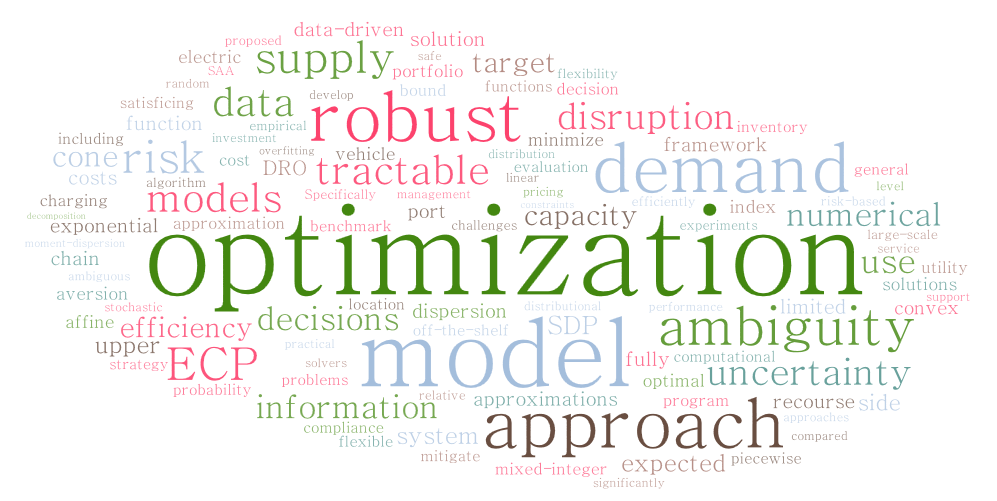

CHEN, Li (陈力)
 |
Ph.D. in Operations Research and Analytics |
About Me
I am a lecturer (Assistant Professor) in The Discipline of Business Analytics, The University of Sydney Business School. Prior to Sydney, I was a research fellow in the Institute of Operations Research and Analytics (IORA) at National University of Singapore (NUS), where I obtained my Ph.D. under the supervision by Professor Melvyn SIM and Professor Kim-Chuan TOH. Prior to NUS, I received my BSc in Computational Mathematics from University of Science and Technology of China (USTC).
Research Interests
My research aims (i) to develop new models and algorithms that help transform data into insights to make better decisions and (ii) to solve impactful problems in various domains to generate managerial insights and policy implications for decision-makers. The word cloud below, created from some of my papers’ abstracts, might give you a snapshot of my research.
|  | Area of Interests
|